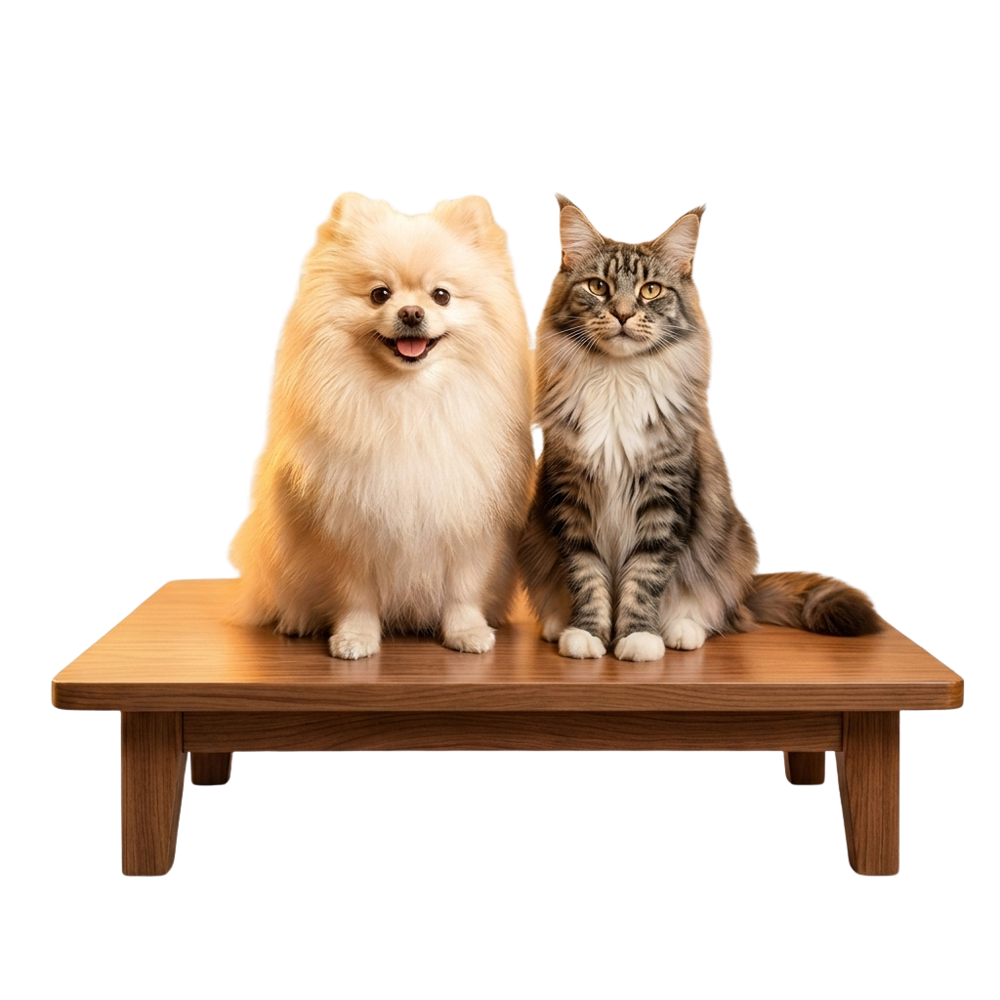

Saúde com mais contexto. Cuidado com mais continuidade.Health with more context. Care with greater continuity.
Zelus reúne informações de saúde que costumam ficar dispersas. Primeiro para pessoas, com Zelus Health. Depois para pets, com Zelus Pet.Zelus brings scattered health information together. It starts with people through Zelus Health, then supports pets through Zelus Pet.
Toda a vida.
Do pré-natal ao 65+. IA clínica que entende sua fase da vida.
Testar grátis por 7 dias ↗

Sua história de saúde, em uma visão contínua.Your health history in one continuous view.
Exames, sintomas, indicadores e histórico clínico em um lugar. O relatório de pré-consulta ajuda a organizar o que merece atenção antes da conversa com o médico.Exams, symptoms, indicators and clinical history in one place. The pre-visit report helps organize what matters before speaking with your doctor.
Conhecer Zelus HealthExplore Zelus Health ↗Toda a vida.
Do pré-natal ao 65+. IA clínica que entende sua fase da vida.
Testar grátis por 7 dias ↗O histórico de quem faz parte da família.The health history of a member of the family.
O Zelus Pet organiza exames e marcadores por espécie, junto à trajetória de saúde de cada animal. O tutor leva informações mais claras para a consulta veterinária.Zelus Pet organizes exams and species-specific markers alongside each animal’s health history. Owners can bring clearer information to veterinary appointments.
Conhecer Zelus PetExplore Zelus Pet ↗mas sente.
O Zelus entende.
Exames, vacinas, peso e rotina do seu pet em um só lugar.
Conhecer os planos ↗
Mais preparo para conversar com quem cuida.Better prepared to speak with care professionals.
O Zelus organiza informações e apoia a preparação para consultas. A avaliação clínica e as decisões de cuidado continuam com o médico ou veterinário responsável.Zelus organizes information and helps prepare for appointments. Clinical assessment and care decisions remain with the responsible doctor or veterinarian.
Falar sobre o ZelusTalk about Zelus →